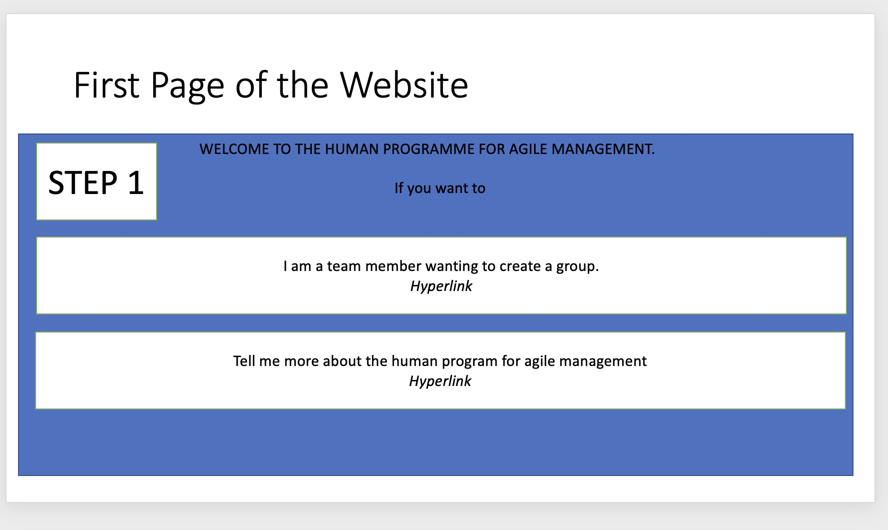

Want to Help to Build a future without management?

Photo of WALL•E by Jason Leung on Unsplash
Introduction
Wouldn't you love to live in a society where there is no need for management or hierarchy with peers simply being able to work in harmony together? This does indeed sound like a utopia but in this guide, I will be introducing you to the world of the Agile software development human program, which helps automate the agile software development process by allowing four students to work on a project without any intervention of a superior.
Through this blog post, I will be introducing you to the human project, its multiple parts and how you can get involved in improving the future of humanity.
Learning Objectives
In this blog post you will learn:
- What this human project is about and how it benefits society
- How to Set up the Enviornment to Work on making the human program.
- Knowledge of the current state of the human program
- How to become involved in making the human program
- Understanding the tests
Say hello to the human program.
The goal of this human program is to allow a group of people that have no experience working in a group in a software development project using the agile methodology to be able to undertake their project without the need for a human manager or a team leader
This will be possible through the human program effectively acting as the management of the project, and will 'order' the team members to do work.
Although this human program is aimed at beginners to the world of agile software development process, the dream scenario is that overtime it will be able to be used by a large array of people such as a group of people, equal in rank not wanting any person to lead them or companies wanting to reduce their middle management salary bill.
What is a human program?
A human program is a computer program that replaces work previously done by humans whilst still using humans to undertake certain tasks on behalf of the program. For example, our human program takes upon the work usually done by the management whilst still relying on the other team members to undertake the work.
Why should you help with this ?
This human program hopes to help revolutionise the industry through the automation of a key, expensive component of all companies that have historically not been dramatically impacted through technological advances.
Through helping shape this human programe you will
- Become part of community of like minded people wanting to make a significant change to how society operates,
- Learn much more about how Git works.
- Become a better programmer through developing lots of code.
Summary of what has been currently down.
Currently the plans for the functionality of the human programme are split into three different libraries that I will go into detail below.
Each of these libraries are at a different phase in their initial development cycle. I will explain what they do so far and what they will do at a later stage below.
What is there left to do?
There is still lots to do before this human program is ready to be used in a real-world environment. Currently, only 1 of the 3 libraries is near completion. With your help together we can make this human program.
A detailed list of what is left to do for each library will be present in each of the libraries.
What I need to help improve this program?
To follow along with this blog post you will need:
- A computer
- An internet connection
- Pycharm (If you do not have it I will show you how to get it later)
If you don't have these, don't worry, just read along with us and implement later.
Optional Requirnments
The following are not absolutely necessary but can be useful.
- A github account (if you want to contribtute to the code base)
- A python anywhere account (if you want to host your instance of the human program online)
We will explain how you can get these later on if you already don't have them.
Libraries
This project is composed of three librarys that each take a different function within the human program.
- The onboarding library is welcoming teams and people to the human program
- The communication library sends information to the team members in the form of emails and text messages
- The Integration library uses GET and POST requests to retrieve and send information relating to GitHub issues between the human program and GitHub.
Each of these libraries is currently at a different stage of development which I will explain below. I will also explain what a library is, what the libraries currently do and what we plan they will do in the future.
What is a Library?
Just to avoid confusion these libraries are human program libraries, not python libraries (Although in this project most of the functionality will be handled by python classes with the same name as our libraries), they are a collection of code that I have created that undertakes a certain function within this project.
The Development of this library's are broken up into stages, mirroring the base agile software development process, I will explain this in greater detail later:
- Creating a Demo of what your making with a prototyping tool such as Figma,Adobe XD or Power Point. I used Power point to create my demo.
- Adding Details to the powerpoints's such as what the library does, such as what information is acceptable.
- Building a Test Plan based upon what problems you think could occur.
- Build a basic implementation of the project
- Build a simulated interface and discuss it with a user group.
- Show the simulation to real users of the program.
- Develop the actual project and publish it
Python Interfaces
To provide a blue print to you, the future developers of this project of what I think the project is currently like I decided to implement Python Interfaces. The interfaces are highly commented methods that will provide you with an invauable structure if you want to get on board as a member of the commmunity that should help you become familar with how the human program works as soon as possible. By writing the interfaces I hope I have saved you, the person who folows after me a bit of time. I encourage you to write interfaces for any future librarys being written or even new functions for current librarys that you simply don't have the time to implement.
Onboarding Library
The Purpose of the onboarding library is to welcome new users to the human program, to make them feel at home whilst we take down their details. A great onboarding experience allows a person that does not know much about a certain matter to be able to get it set up. Below is the initial design created whilst I was creating the prototype in PowerPoint.
I plan that the onboarding library will allow people:
- Create Teams
- Learn more about the human program.
The second link on the above page giving people more information about the human program is not currently planned (If you want you can create a GitHub issue with your plan for informing the user about our human program) but for now, I will show you the second stage of this process, creating the team.
In the second step of the onboarding process we get the details from the user about the team members' names and Github names. We then allow them to submit this.
After this the onboarding library will ask the communication library to email a team member asking them to set up a doodle and google form and then provide them to the human program. This email will contain a link to the third step of this process. This email will tell people how to create a free doodle poll and a free google form.
The Interface (Blue print for the class) for this library is below:
# Python Interface
class OnboardLibraryInterface:
"""Creation of New Groups and Teams, Providing the onboaridng process"""
def create_team(self, team_name: str) -> int:
"""A method to allow for the creation of the team. It will ask for a team name and provide the team ID
number. If the team name is invalid a negative int will be returned. this method will add a team to the JSON
file. """
def check_team_name() -> bool:
"""A Method to check if a team name is valid nested function as will only be used when creating a team."""
if len(team_name) <= 0 or len(team_name) > 30:
return False
else:
return True
pass
def create_person(self, person_name: str, person_email: str, person_github_str) -> int:
"""A method to allow for the creation of a person and add them to the JSON File. If any details are incorrect
an negative int will be provided otherwise their id will be returned """
def check_github() -> bool:
"""Will use GitHub API to make sure person exists on github """
pass
def check_person_name() -> bool:
"""A Method to check if a person name is valid nested function as will only be used when creating a
person. """
if len(person_name) <= 0:
return False
else:
return True
def check_email() -> bool:
"""Will check if email is valid up to due if you want a basic implemntation or a more advanced such as
checking website DNS to makesure website exists """
pass
pass
def add_person_to_team(self, person_id: int, team_id: int) -> bool:
"""A method to allow a person to be added to a team. Will use check_team_valid and check_person_valid to
check they exist. Will return true if able to add person """
pass
def remove_person_to_team(self, person_id: int, team_id: int) -> bool:
"""A method to allow a person to be removed to a team. Will use check_team_valid and check_person_valid to
check they exist. Will return true if able to removed person """
pass
def check_team_valid(self, team_id: int) -> bool:
"""A method to check if a team is valid"""
pass
def check_person_valid(self, person_id: int) -> bool:
"""A method to check if a person is valid"""
pass
Communication Library
The most important role of a human manager is to have a good level of communication with the members of their team, unfortunately due to the fact that the human program is a computer program and not a person this would normally be a challenge. But in this human program, we have built a community library that will be able to communicate with the users.
The communication library is only responsible for one-way communication with the user, although the communication library may send links in certain notfications it is upto the
Important Note: On the copy of human program on the GitHub repository the username and password for the SMTP email function has been removed for security reasons. If you don't have a gmail account follow this guide on how to create one. By default SMTP is not enabled on gmail, to enable it follow step 2 of this guide
What has been done so far with Communication Library
So far we have completed both the first and second phase I described above where we have been able to get the most important functionality of the library working (sending the communication's through email).
What still needs done to the Communication Library
- Allow Communication's to be sent through an alternate way (We will do this together later on)
- work with the community to remove any bugs.
class IntegrationLibraryInterface:
"""A blue print on how to intergrate with github and I ideas on how to intergrate with others in the future"""
def make_github_issue(self, title: str, body: str, assignee: str, milestone: str,
labels: [str]) -> int:
"""A method that will allow github issues to be created by the human program. Returns issue id or -1 if
invalid """
pass
def read_github_issue_assignee(self, issue_id: int) -> str:
"""Reads the issue and returns the current assignee"""
pass
def read_github_issue_labels(self, issue_id: int) -> [str]:
"""Reads the issue and returns the current labels"""
pass
def read_github_issue_milestone(self, issue_id: int) -> str:
"""Reads the issue and returns the current milestone"""
pass
def read_github_issue_title(self, issue_id: int) -> str:
"""Reads the issue and returns the current title"""
pass
def read_github_issue_body(self, issue_id: int) -> str:
"""Reads the issue and returns the current body"""
pass
def amend_github_issue(self, title: str, body: str, assignee: str, milestone: str,
labels: [str], issue_id: int) -> int:
"""A method to allow issues to be ammended"""
pass
The intergrations Library
The integration library focuses on integrations with other tools such as GitHub, google sheets and doodle. This library is currently in the middle of the second phase - developing the code. The integration Library handles tasks in this human program.
One of the Integrations of this library will be to connect to the GitHub Issues API to create,read and amend issues. A Github issue will be equal to a task on our system. I have been doing some research and found this guide on the github REST API very useful.
This library will also have an integration with Doodle. Doodle does not have an easily accessible API but through research, I found a GitHub repository that provides this functionality. I have yet to test this API but it seems to be used by a large educational organisation in the USA.
We will also have an integration with google forms. This part of the project has not been implemented or researched at all outside of the exploratory process to check if it is possible. Google provides documentation on the Forms API here.
Currently I have implemented temporary code that allowed for tasks to be created locally without adding them to GitHub. The communication library sends out a notification when the task needs to be done and the user then sends a response by clicking a URL.
What has been done so far with intergrations Library
Currently the first phase has been complete for this library along following in the second phase
- form allowing tasks to be created through the human program.
- code that the human program to the JSON file
- A class that has non-implemented methods ready for connection to GitHub
What still needs done to the intergrations Library
- Actual GitHub Intergration
- Removal of the temporary code
- Adding google forms intergration
- adding doodle API.
The Interface (Blue print for the class) for this library is below:
class IntegrationLibraryInterface:
"""A blue print on how to intergrate with github and I ideas on how to intergrate with others in the future"""
def make_github_issue(self, title: str, body: str, assignee: str, milestone: str,
labels: [str]) -> int:
"""A method that will allow github issues to be created by the human program. Returns issue id or -1 if
invalid """
pass
def read_github_issue_assignee(self, issue_id: int) -> str:
"""Reads the issue and returns the current assignee"""
pass
def read_github_issue_labels(self, issue_id: int) -> [str]:
"""Reads the issue and returns the current labels"""
pass
def read_github_issue_milestone(self, issue_id: int) -> str:
"""Reads the issue and returns the current milestone"""
pass
def read_github_issue_title(self, issue_id: int) -> str:
"""Reads the issue and returns the current title"""
pass
def read_github_issue_body(self, issue_id: int) -> str:
"""Reads the issue and returns the current body"""
pass
def amend_github_issue(self, title: str, body: str, assignee: str, milestone: str,
labels: [str], issue_id: int) -> int:
"""A method to allow issues to be ammended"""
pass
How to design a human program ?
We will use the stages that we have talked about above to create phases within the human program.
Creating the prototype
As I just talked about you can use either Figma,Adobe XD or Power Point to create this prototype, you can even use pen and paper if your prefer. I will be explaining this to you using power point due to it most people already having it on their computer.
First we will be designing the prototype using through using boxes in powerpoint.
Make a base design for what you want your prototype to look like alongside what features it will have (for example my example below, for the first page of a web site prototype for the onboarding process there is two hyperlink boxes).

Create a prototype for every page / feature the human program will have.For features that don't have an outwards apperance such as an intergration between an API and a human program write a bullet point powerpoint slide on its behaviour.
Adding Details to the powerpoints's such as what the library does, such as what information is acceptable.
At stage we add additional information to the powerpoints (Either to the Notes section of the power power or to a companion powerpoint). Additonal Information includes
- How you expect a certain page/ feature of your project to behave.
- How will the project behave depending on certain inputs which is very important for a project such as this human project.
For example, when creating new people in this program we need to make sure they have a valid GitHub name. To ensure this we will undertake checks as I talked about above. In the powerpoint we need to provide details on whats happens when someone has an invalid or valid github name and what happens when none is provided, which is shown in my snippet below.
If GitHub Name is Valid:
-> Allow Creation of Account
If GitHub Name is Not Provided:
-> Stop Creation of Account, Ask user to input again.
If GithUb Name is Wrong:
-> Inform them that no GitHub person exists with this name and ask them to input again.
Building the Test Plan
Now that we have designed prototypes it is now time to design our test plan. Many people are of the view that it is better to write tests before coding I agree with them as it allows us to focus on thinking on how to solve our problem and what are acceptable solutions to that problem as opposed to spending a huge amount of time making a solution, which might not even be correct.
What are tests
Tests are a way, we as software developers can make sure are code is working as we expect it to work.
In this human program project, as with most other software development projects there will be two different types of tests.
- Automated Tests
- Tests that are written by us that the computer can run automatically.
- Will usually be small 'units' of code testing one small function of the code.
- These tested are very quick to run and are great in collaborative projects
- Manual Tests
- Manual tests are written by us for them to be tested by either us or a tester.
- They are usually quicker to get written than Automated Tests, and allow us to undertake effective integration testing.
A great tutorial on testing is this one by real python which explains the difference between these two types of test and also talks about the difference between Intergration and Unit Testing (Integration tested are when multiple things are tested together, unit testing only tests one thing at a time.)
Lets think about Tests
It it time to think about tests that we might want to right for the human program. We want our tests to
- Cover as much of the project as possible.
- Cover as many different posslbiity's as possible.
- For example if we we're writing a test that make sure a password was not too long we would write a test that was valid, valid at the border ,invalid and finally invalid at the border to ensure that every possibility is being looked at.
- Being robust in that changes in the code base in the future should not make a test provide false-positives.
In this blog post we will be writing two tests.
The First Test will be a automated unit test that will make sure people cannot insert invalid phone number into the system in the communication library.
The Second test will be a manual test to check that the link on the onboarding flask web page in the onboarding brings them to the correct place. This test will be undertake manually by either the developer or a tester.
Designing your test plan
I used excel to make my test plan. This YouTube shows how to design a simple test case similar to the one I am demonstrating below. At this point we will not have any actual results due to the code not being written yet so leave that blank and set the status to 'Not yet implemented'
Below are what the tests should look like in their respective homes. In my project's I usually create a convention of how I name my tests for example the first unit test I writing relating to the communication Library I call U_COM_1
With manual tests I undertake a similar approach to naming of manual tests, for example my first manual onboarding test is called M_ON_1
Automated Unit Test Sheet
| Test Case | Objective | Data Being Tested | Expected Result | Actual Result | Status |
|---|---|---|---|---|---|
| U_COM_1 | Testing what happens when someone enters an invalid phone number | Invalid Phone Number: 297269000, Valid Coutntry Code:44,valid message : hello | -1 | Not yet implemented | Not yet implemented |
Manual Test Sheet
| Test Case | Objective | Data Being Tested | Expected Result | Actual Result | Status |
|---|---|---|---|---|---|
| M_ON_1 | A test to make sure the links on the onboarding page bring you to the write place | A initialised onboarding module running on a flask web sever | Not yet implemented | Not yet implemented | Not yet implemented |
Writing Test
Now that we have planned our tests it is now time to write them. I will show you I wrote the unit test for U_COM_1 and how I wrote the test plan for M_ON_1 below.
Writing a Unit Test
When writing my unit tests I followed this real python guide on unit tests it provides great detail on what a unit test needs. As you can see below from the commented code this test provides an invalid phone number to the method and checks to make sure the actual answer is equal to the expected answer. As I have only made the interface for this method (The Code has not been implemented yet.) I have commented out the code calling the communication library until you or another member of the community has got that code running.
class MyTestCase(unittest.TestCase):
"""Testing the communication library"""
def test_send_text_invalid_phoneNumber(self): # U_COM_1
"""Testing what happens when someone enters an invalid phone number"""
# tester = Communication(sent_from, password, url)
phoneNumberINVALID = int(297269000)
countryCodeVALID = 44
message = "hello"
# acutal_answer = send_text(phoneNumberINVALID, countryCodeVALID, message)
expected_answer = -1.0
temp_actual_answer = -1.0
self.assertEqual(expected_answer, temp_actual_answer) # change to acutal_answer when the method is created in Communication
Writing the test plan for a manual test.
For my manual tests I add an additional column into excel called 'Notes'. In these 'Notes' I provide steps on how to undertake the test. For example, in M_ON_1 test notes I have told the user to go to the onboarding page of the website (step 1), and click all the buttons to make sure they go to the place that they're title to go to (step 2). I also inform the tester of the condition needed for this test to pass (all the links working properly)
Commenting Tests
It is vital that all automated tests are commented as much as possible to make it as easy as possible for other members of the community to understand what the test is about . Always write the test case number and provide a short description does. It is also sometimes useful to add some additional details such as what are exterme valid data etc.
Build a basic implementation of the project
The Next Stage of designing the project is to make a basic implemntation. Click here to acess the technical part of this blog post on how to get up the human programs enviornment and how to add new features to it.
Build a simulated interface and discuss it with a user group.
The next stage will to improve upon the code already made and the power point to create a simulated interface (i.e a fully working demo of a small part of the program) and show this to a user group. The User group should ideally comprise of the target audience (in our case students who have never been invovled in managment of a agile project) to gain their views. Record these views and incorpate them in.
Show the simulation to real users of the program
For stage I would publish the simulation on to a forum like the opensource subreddit to try and get the views of a wider area of users, who will try your simulation in the real word. Record their feedback and resolve any issues you find.
Develop the actual project and publish it
This is the final phase of the development process where we develop a fully working copy of the human program. After we finish development we will publish it online and then improve upon it as more people open issues on it.
How can I help if I can't programe.
You can help even if your can program.
- Have any great ideas, create an issue on Github asking for a feature request
- Test the human programe and if you find any issues create a issue
Ideas for Features
On top of the already, non-implemented features that I have told you about above I have some other ideas for great features to add to the human program.
- Having an intergration with a Robot Phone operator such as Robottalker
- Create a new Library to allow the Product Owner to interact with the human program.
- Intergrate the human program with the stripe API to allow the human program to handle the billing and paying of the team members.
- Intergrate the human programme into a Chatbot/Discord Bot/Slack Bot to allow the team memmbers to talk with the human program through these methods and also get notfications through these mediums also.
What if this human program project does not have an active community on GitHub
If when your reading this blog post the human program does not have an activte community on GitHub, don't worry, you can build one.
- Write blog posts, similar to this blog post talking about how you have improved the human program.
- Write tweets on twitter asking people to help.
- Ask questions on a stackoverflow to try on your issues to try and get people engauged in the project.
How to Create a GitHub issue
Follow this great GitHub Doc to create a GitHub issue.